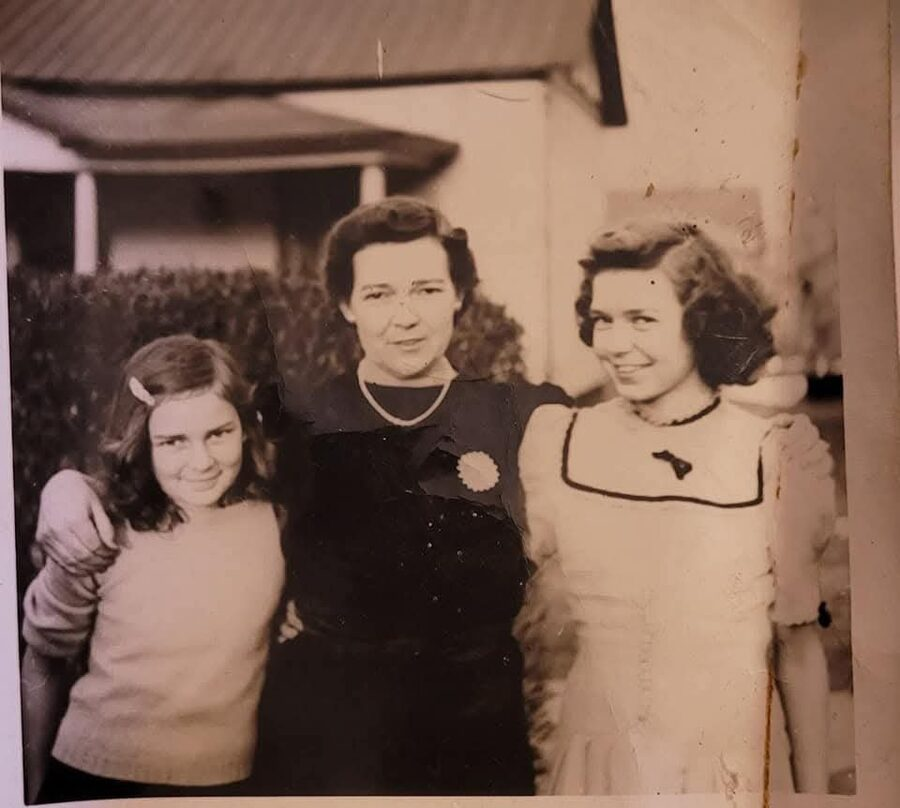
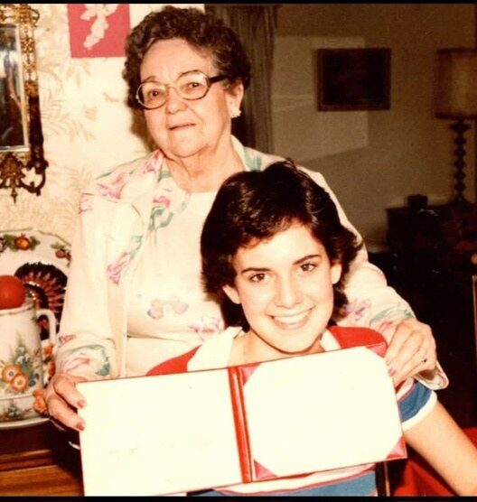
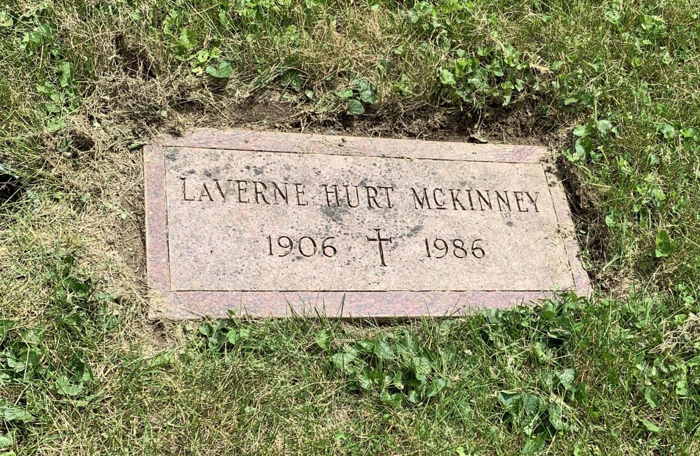
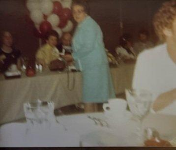

Laverne Hurt
17 October 1906 – 3 October 1986
Quick Facts
Immediate Family
Parents
- James Emmette Hurt (1879–1955)
- Edna Bailey (1880–1926)
Spouses
- Dallas Cecil McKinney (1904–1958)
Children
- Jackson Ahmeek “Jack” McKinney (1924–2014)
- Edgar Alba “Ed” McKinney (1928–2018)
- Edna Ellen McKinney Graff (1931–2002)
- Ruth Laverne McKinney (1932–2018)
Siblings
- Melba Hurt (1909–1992)
- James Roland Hurt (1910–1980)
- Annadine “Deany” (Hurt) Duncan (1913–1975)
- Unnamed brother (born 1914)
- Emmett Jay Hurt (1923–1991)
Family Relationship Notes
West Virginia birth records identify Laverne as the daughter of James Emmette Hurt and Edna Bailey. The 1910 and 1920 censuses place her with her parents in Raleigh County, West Virginia.
The 10 April 1923 marriage to Dallas Cecil McKinney in Ironton, Ohio, comes from family records and compiled trees; the Lawrence County marriage record has not been found. Their four children are named in census records and family obituaries.
Laverne’s family remembers her as Baptist and as a cook at the Kanawha Valley Baptist Association camp on Tyler Mountain. Her great-granddaughter also recalls that she helped build a church in Beckley. These details are family accounts.
Her siblings listed above are drawn from census and family research. Waldo Emmett Hurt (1902–1904) remains an unplaced infant-death lead; the death entry names a father “F. E. Hurt,” so Waldo is not included in the Siblings card. A separate birth-register entry records an unnamed brother born in 1914.
Family testimony from Lisa Graff reports that Laverne’s son Ed told her stories of abuse by his father and that she had heard stories about Laverne as well. This is attributed family testimony, not an independently verified record.
On Family Tree Sites
Couple Folder
Life Timeline
17 October 1906 · Birth · age 0
Born in Beckley, Raleigh County, West Virginia, according to the state birth record; daughter of James Emmette Hurt and Edna Bailey.
1910 · Parents’ household · reported age 3
Enumerated with her parents in Skelton, Raleigh County. Her father’s occupation was recorded as railroad brakeman.
1920 · Parents’ household · reported age 13
Enumerated with her parents’ family in Sprague, Raleigh County, West Virginia.
10 April 1923 · Marriage to Dallas Cecil McKinney · age 16
The family record gives the marriage in Ironton, Lawrence County, Ohio. The original county marriage record has not been located.
21 January 1924 · Son Jackson Ahmeek born · age 17
Born in Beckley, West Virginia. The 1924 date is used because the 1930 census lists him as six; one Ancestry tree gives 1923, which would predate the reported marriage.
19 October 1926 · Mother’s death · age 19
Her mother Edna Bailey Hurt died at home in Beckley, Raleigh County, West Virginia.
16 October 1928 · Son Edgar born · age 21
Born in Beckley, West Virginia. Some compiled trees give 1929; the 1930 census age and family record support 1928.
April 1930 · Town district household · age 23
The census lists Laverne with Dallas and sons Jackson and “Edward A.” in Raleigh County, West Virginia.
12 January 1931 · Daughter Edna Ellen born · age 24
Born in West Virginia.
10 July 1932 · Daughter Ruth Laverne born · age 25
Born in Beckley, Raleigh County, West Virginia.
16 October 1940 · Husband’s draft registration · age 33
Dallas registered at Mt. Tabor, Raleigh County, and named Laverne as his wife and contact. The 1940 census lists the family of six in Raleigh County.
After 1945 · Move to Cincinnati · age 38 or older
Family research places the move north after the war and before Dallas’s 1958 death; the exact year has not been established.
24 November 1955 · Father’s death · age 49
Her father James Emmette Hurt died in Beckley, Raleigh County, West Virginia.
1 December 1958 · Widowed · age 52
Her husband Dallas died in Cincinnati, Ohio.
3 October 1986 · Death · age 79
Died in Cincinnati, Hamilton County, Ohio, and was buried beside Dallas at Spring Grove Cemetery.
Life Story
Laverne Hurt was born on 17 October 1906 in Beckley, Raleigh County, West Virginia, the daughter of James Emmette Hurt and Edna Bailey. Her father worked with his hands all his life in Beckley: a railroad brakeman in 1910, later a carpenter and a hardware and furniture man. Her mother's people, the Baileys, had been in Raleigh County since before the county was formed. The 1910 census finds the family at Skelton, and the 1920 census at Sprague, both in Raleigh County.
On 10 April 1923, by the family record, Laverne married Dallas Cecil McKinney in Ironton, Ohio, across the river. She was sixteen and he was eighteen. Three years later, on 19 October 1926, her mother died at home in Beckley at forty-six, when Laverne was twenty.
Laverne and Dallas raised four children in the coal country around Beckley: Jack, Edgar, Edna Ellen and Ruth Laverne. Her faith was something she did with her hands. She cooked at the Kanawha Valley Baptist Association camp on Tyler Mountain, where her daughter Ruth met her future husband, and, by her great-granddaughter's account, she helped build a church in Beckley.
After the war the family moved north to Cincinnati. Dallas died there in 1958, and Laverne lived on as a widow for twenty-eight years. The family called her "Nana" and remembers her as loving to the whole family. She once assured a young in-law that she could get him a job at Procter & Gamble. It didn't work out, but the family remembers the offer. And when her future son-in-law Richard got cold feet and backed out of the wedding the first time, it was Nana who forgave him.
In her last years Nana lived in a nursing home in Cincinnati, where her daughter Ruth and the great-grandchildren came to see her. She died in Cincinnati on 3 October 1986, at seventy-nine, and was laid beside Dallas at Spring Grove Cemetery. For years afterward the family went there together to put flowers on her grave.
More of Laverne's story will be added as family members share their memories.
Photo Gallery







Family account from Lisa Graff
In a Facebook Messenger conversation dated 5 October 2026, Lisa Graff (Rick's cousin-in-law, married to Laverne's son Ed/Edgar) reported: “And it wasn't until Sona died and I was trying to put Ed in a nursing home that he shared stories about how abusive his father was and I had also heard stories that Nanna was too.” This preserves Lisa's report of what Ed shared and what she had heard about Laverne; it is attributed family testimony, not an independently verified record.
Sources and Evidence
- West Virginia Births, 1853–1921: Laverne Hurt, b. 17 Oct 1906, Beckley, Raleigh County; parents James Emmette Hurt and Edna Bailey (seen as a record match on Geni)
- 1910 and 1920 U.S. censuses, Raleigh County, WV (Skelton; Sprague), in her parents' household (images in the couple's Documents folder)
- 1930 U.S. census, Town district, Raleigh County, WV, ED 23, sheet 25-A, line 29: Dallas C. McKinney, 24; wife Lavern, 23; sons Jackson A., 6, and "Edward A.", 1 (image in the couple's Documents folder)
- 1940 U.S. census, Town district (Wickham), Raleigh County, WV: Dallas, carpenter, with Laverne and children Jack, Edgar, Edna and Ruth (image in the couple's Documents folder)
- Dallas C. McKinney's WWII draft card (16 Oct 1940) names "Mrs Laverne McKinney", wife, R-1, Beckley, as his contact. MyHeritage https://www.myheritage.com/research/record-20912-18728048/dallas-c-mckinney-in-united-states-world-war-ii-draft-registrations
- Social Security Death Index: Laverne McKinney, b. 17 Oct 1906, d. Oct 1986, last residence Cincinnati, Ohio 45243
- Find a Grave memorial 78993275, LaVerne Hurt McKinney: b. 17 Oct 1906 Beckley; d. 3 Oct 1986 Cincinnati; buried Spring Grove; married 1923; parents James Emmette and Edna Bailey Hurt https://www.findagrave.com/memorial/78993275
- BillionGraves burial index: Laverne McKinney (born Hurt), 1906–1986, Spring Grove Cemetery
- Parents' couple profile, James Emmette Hurt × Edna Bailey: marriage 14 Jun 1902, Raleigh County; Edna d. 19 Oct 1926, Beckley; James d. 24 Nov 1955, Beckley; children's list
- Cliff Shamblen's autobiography: camp cook at Tyler Mountain; the Procter & Gamble offer; "loving to the whole family"; forgave Richard
- Memories of her great-granddaughter (2026): the church in Beckley, nursing-home visits, cemetery visits
- Couple profile, Dallas Cecil McKinney × Laverne Hurt, and the couple story "Nana" (family accounts and research notes)
Research Notes and Open Questions
- Death date: 3 Oct 1986 rests on Find a Grave and the family record; the Social Security index gives only October 1986. One Ancestry tree entry gives 18 Feb 1906 – 19 Apr 1986, which disagrees with her birth record. Her Ohio death certificate would settle it.
- The 1923 Ironton marriage record has not been found (Lawrence County, Ohio, April 1923).
- No obituary has been found. The Cincinnati Enquirer for early October 1986 is the place to look.
- Which church in Beckley she helped build is not yet named; family photos of it may exist.
- Her Beckley house was later torn down; its address is not in the notes.
- When she and Dallas moved to Cincinnati is not pinned down (between 1940 and 1958). An undated residence at Oak Hill, WV, appears in one family tree.
- Her name is spelled Laverne, LaVerne, Lavern (1930 census) and Luverne (some trees): all the same woman.
- The three-women photo is not captioned. Who the two girls are (possibly her daughters Edna and Ruth) needs a family answer.
DNA
No DNA matches linked yet.
Family Notes
Have a story, photo, correction or record about Laverne to share? Leave a note in Laverne's profile feedback doc. We check each note and update this profile.
Profile history: Family Notes section added 14 November 2026 to match the current profile layout; existing content preserved.